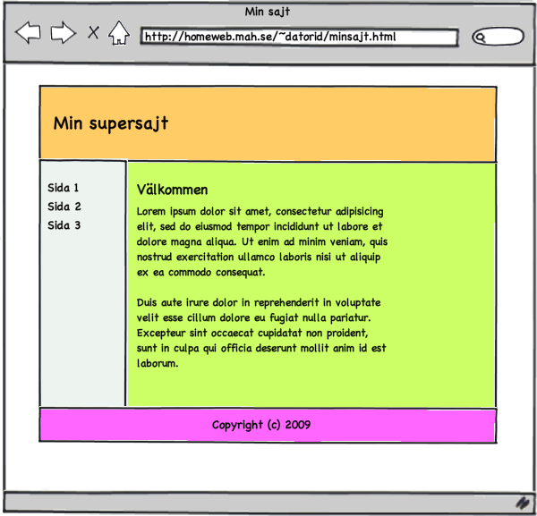
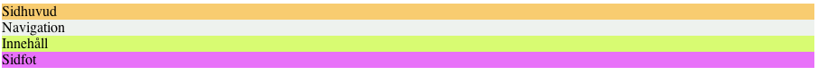
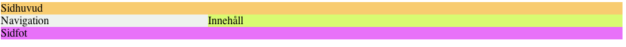
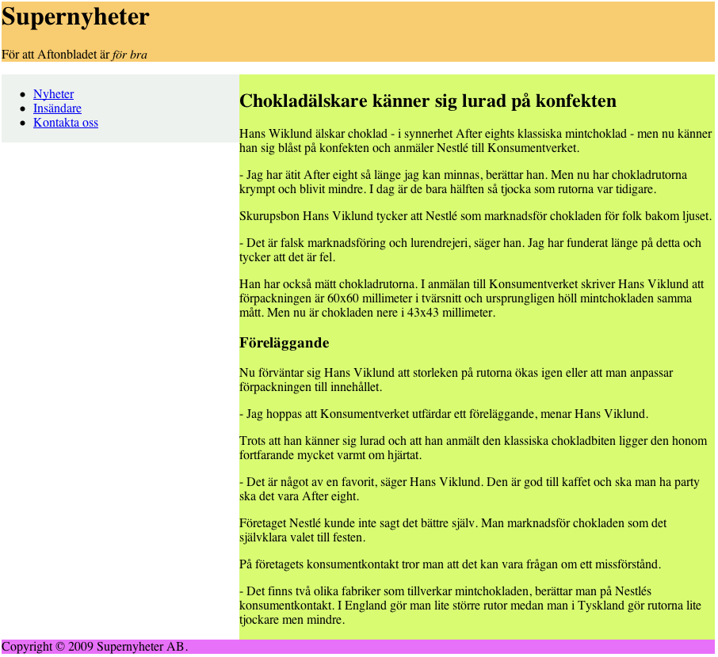
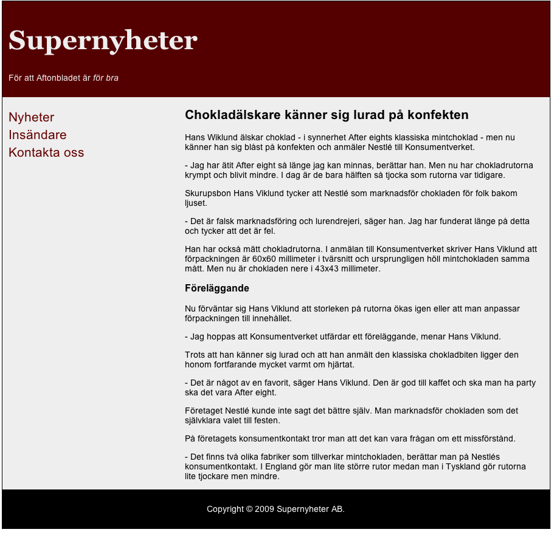

Laboration 3: Layout med CSS
I denna laboration ska du öva på positionering genom CSS och att få flera element i en webbsida att samverka. Du kommer lära dig att göra grunden till en webbplats och att använda denna på flera webbsidor.
Uppgift
Målet är att producera en layout, som likt många webbplatser på Internet består utav ett sidhuvud, en menykolumn, en innehållskolumn och en sidfot. Följande bild illustrerar målet: 
För tydlighetens skull är de olika områdena färglagda, det bör vara framgå vad som är vad. Notera även att denna layout ska ha begränsad bredd samt vara centrerad.
Skelettet
En bra punkt att börja på är att lista ut vilken struktur HTML-dokumentet måste ha för
att kunna stödja denna layout. Det ter sig naturligt att ha fyra separata delar för de olika
områdena - denna indelning bör göras med elementet div. Genom att ge olika id
kan områdena (div-taggarna) ges olika stilar.
Skapa ett HTML-dokument (4.01 Strict) och infoga fyra div-taggar. Ge dem identiteterna
header, navigation, content respektive footer.
Lägg dessutom lite platshållartext i varje div, så att det syns att allt fungerar som det ska.
Även om det fungerar så är det ännu inte så visuellt tilltalande. Skapa en extern
CSS-stilmall och applicera den på HTML-dokumentet (se taggen link och föregående
laboration). Ge sedan olika bakgrundsfärger till de fyra områdena genom att hänvisa till
identiteterna du nyss skapat.
I detta skede kan det se ut såhär: 
Positionering
Som det nämndes ovan ska denna layout ha fast bredd och centreras. Börja med
att innesluta de fyra områdena i en ny div, med id container.
Sedan kan du i en ny CSS-regel ange bredden för denna - välj en "lagom" bredd
(eller ungefär 900 pixlar vid beslutsångest).
Denna div ska sedan centreras. Undersök hur margin kan användas i detta
syfte.
Därefter återstår det faktum att navigationen och innehållsområdet ska ligga bredvid varandra. För att åstadkomma detta krävs tre steg:
- Ange önskvärd bredd för respektive div. Var noga med att totalbredden inte blir
större än bredden för
#container. - Använd egenskapen
floatför att låta navigationen dra sig åt vänster och innehållsområdet dra sig åt höger (eller tvärt om, om du föredrar det). - Sidfoten ska alltid hamna under navigationen och innehållet. Detta kan du se
till med hjälp av egenskapen
clear.
I detta skede bör du ha en centrerad layout, som ser ut ungefär såhär: 
Innehåll
Nu ter det sig vara dags att fundera över vad som faktiskt ska ligga i de olika områdena. Som alltid så är det lämpligt att först bestämma vilka HTML-taggar som bäst kan beskriva informationen, för att först därefter definiera utseendet med CSS. Här följer ett förslag på vilket innehåll som bör finnas var, och vilken HTML som är lämplig.
| Område | Innehåll | Lämplig HTML |
|---|---|---|
| #header | Logotyp | h1 |
| Tagline | p |
|
| #navigation | Meny med länkar | ul li och a |
| Länkar till W3C-validatorn | Den HTML som ges efter godkänd validering | |
| #content | Rubrik på innehåll | h2 |
| En mängd text | p och vad annat som ter sig lämpligt |
|
| #footer | Upphovsrättsinformation | p |
Skapa denna struktur. Om du inte kan komma på något eget ämne för innehållet så kan du låna en artikel från din favorittidning (men kopiera i så fall själva texten, inte källkoden).
Därefter kan det se ut ungefär såhär: 
Bättre form
När det gäller vidare visuell utformning av denna webbsida så finns det förstås lika många möjliga inriktningar som det finns människor. Här följer några förslag:
- Ta bort bakgrundfärg för #navigation, #content - och lägg till bakgrundfärg för #container. Ändra bakgrundfärg för #header och #footer.
- Välj ett snyggt typsnitt och ange en textstorlek.
- Definiera hur länkar ska se ut (glöm inte
:visitedoch:hover). - Lägg till padding för att få lite luft mellan text och layoutens kanter. (Tänk på att padding påverkar totalbredden för ett element)
- Ta bort listpunkterna från navigationsmenyn och gör den mer distinkt till utseendet.
- Ge logotypen ett unikt utseende.
- Centrera texten i #footer.
- Experimentera!
Dokumentet kan sedan - till exempel - se ut såhär: 
Flera sidor
Eftersom all CSS ligger i en externa stilmall kan samma utseende enkelt fås på flera sidor. Kopiera ditt HTML-dokument till en ny fil. Byt ut innehållet i #content till något annat och länka sedan mellan dina två dokument (kanske i navigationsmenyn?).
Validering och feedback
Som alltid, se till att dokumentet validerar. Använd CSS-validatorn för alla stilmallar. Be kursare och labbassistenter om feedback för en djupare bild av vad som är bra och dåligt.